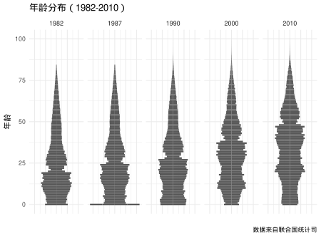
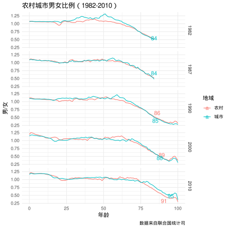
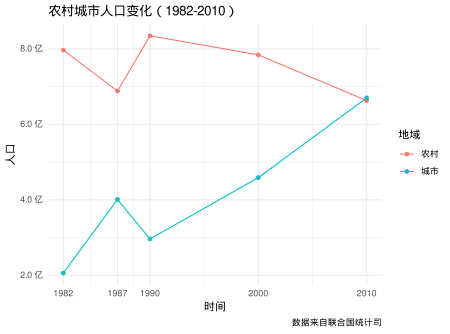

中国真的越来越老了吗
中国真的老了吗？
老龄化是今年提得比较多的一个词，中国人真的老龄化了吗？从下图可以直观的看到，从1982年到2010年五次人口普查中，中国人口的年龄分布确实有增大的趋势。

下面的表格给出了精确的数字，可以看到1982年30岁以下人口占到了62.8%，而这一数字到了2010年只有41.2%，而60岁以上的人口却从7.5%增加到了13.3%，由此看来中国的老龄化确实不是耸人听闻，确实是当前的发展趋势。
| 时间 | 比例：0-30岁 | 比例：30-60岁 | 比例：60-100岁 |
|---|---|---|---|
| 1982 | 62.79321 | 29.69685 | 7.509944 |
| 1987 | 60.05553 | 31.80970 | 8.134770 |
| 1990 | 58.66278 | 32.75971 | 8.577509 |
| 2000 | 48.26399 | 41.27596 | 10.460051 |
| 2010 | 41.23902 | 45.43618 | 13.324804 |
男女比例真的失调了吗？
现在娶媳妇越来越难了，特别是农村，长期以来大家都将原因归结为男女比例失调，农村为了争夺宅基地和从事大量体力劳动，重男轻女更为严重，事实是这样吗？

从上图可以看出，随着时间的推移，男女比例确实有增加的趋势，前三次普查男女比例在1.12左右，后两次普查这个比例上涨到1.2左右，而且农村男女比例与城市男女比例相差不大。另外还可以看到一个有意思的现象是男的寿命确实不如女的。1982年62岁以上的人口中女大于男，2010年这一拐点提高到了75岁，也就是到了到了2010年75岁以上的老人中女比男多。图中的数字表示男女比例为1/2的年龄，这一数字随着年代的发展也在提高，可见对于男人来说，社会发展该有多么重要，知道为啥男的喜欢看新闻了吧。
城里人越来越多了吗？

城里人真的越来越多了，从1982年的2亿到了2010年的接近7亿，农村人口略有减少，从8亿降到了7亿。值得一提的是1987年有一波农村人口增加，城市人口减少的特异值，发生了什么？